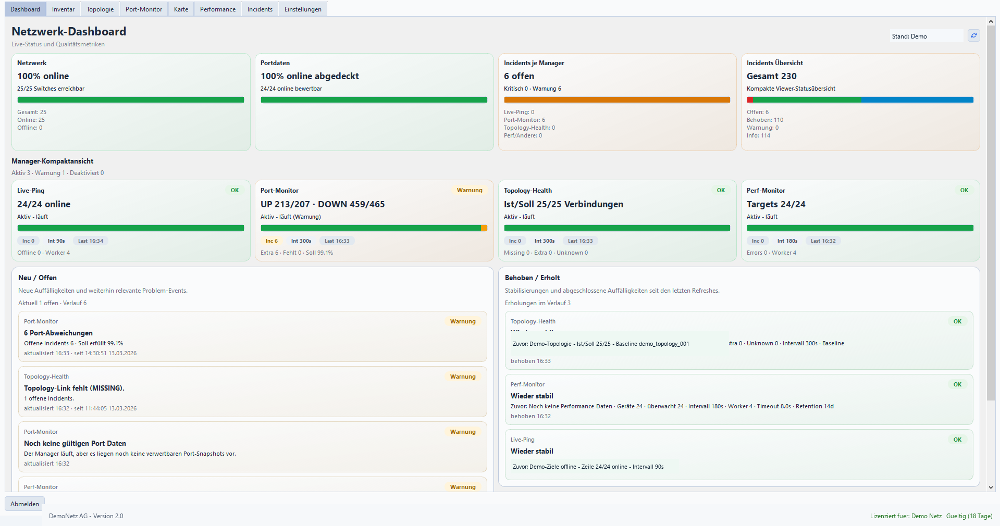
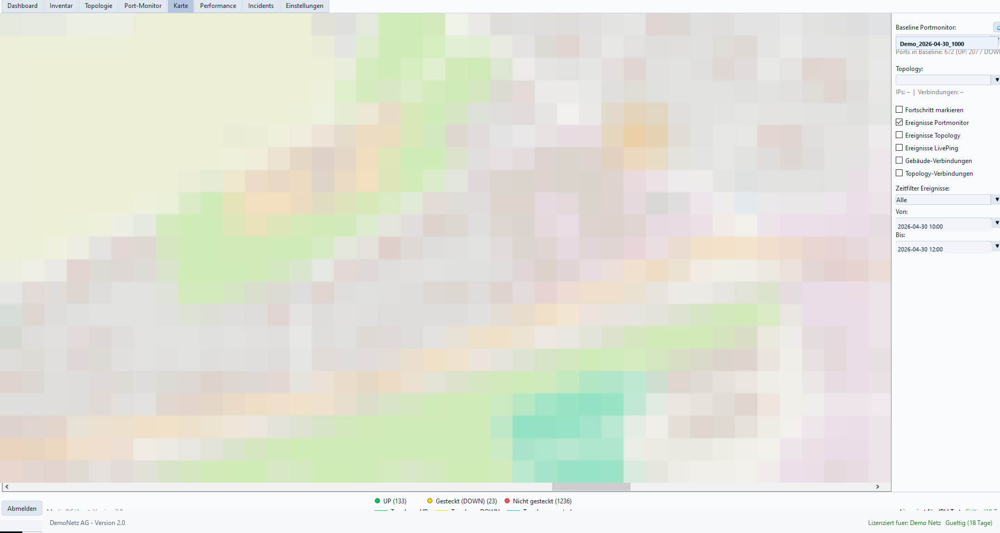
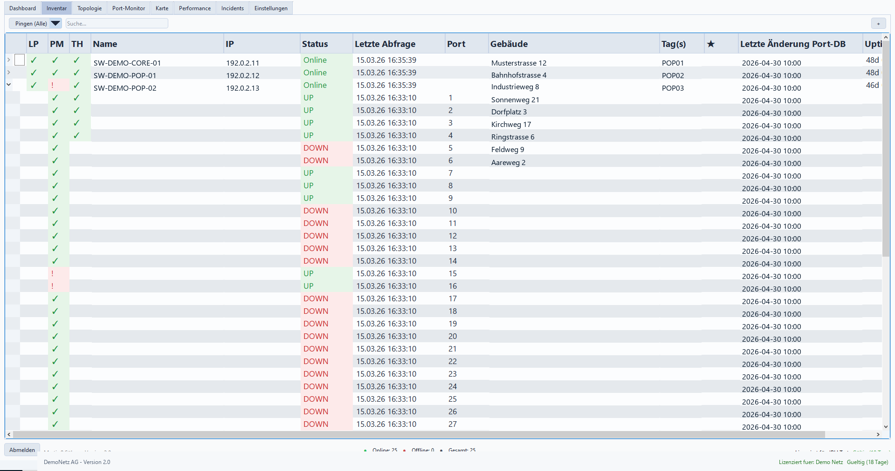
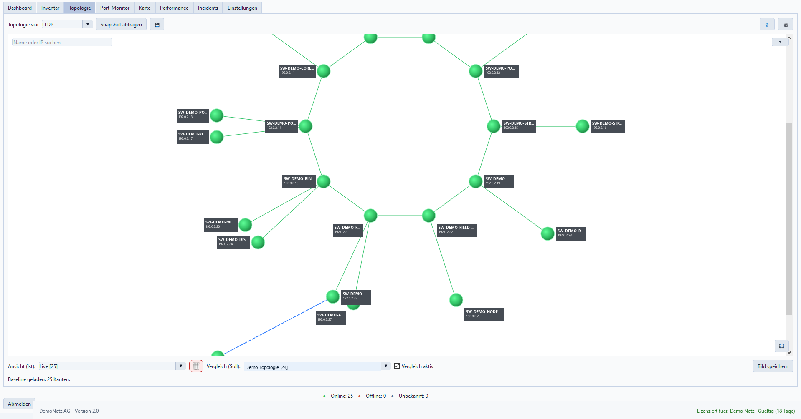
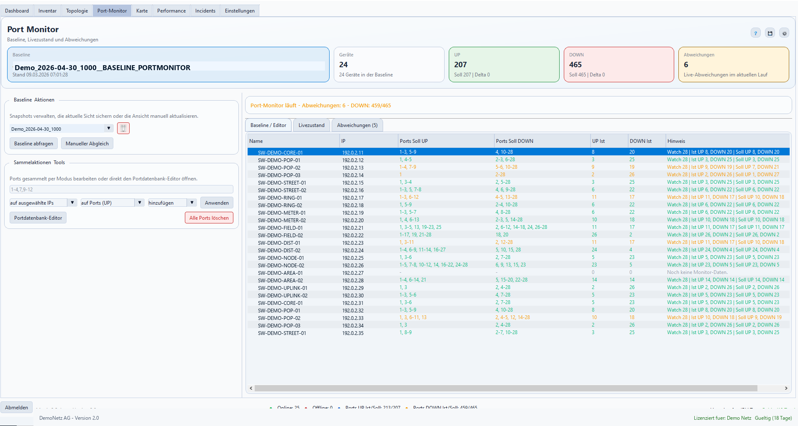
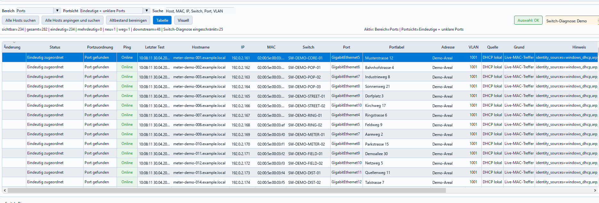
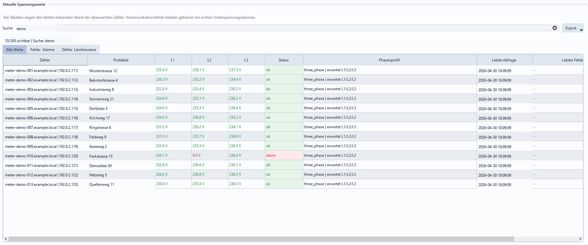
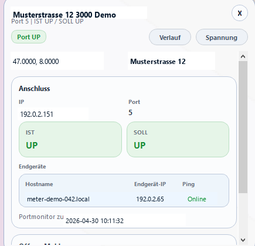
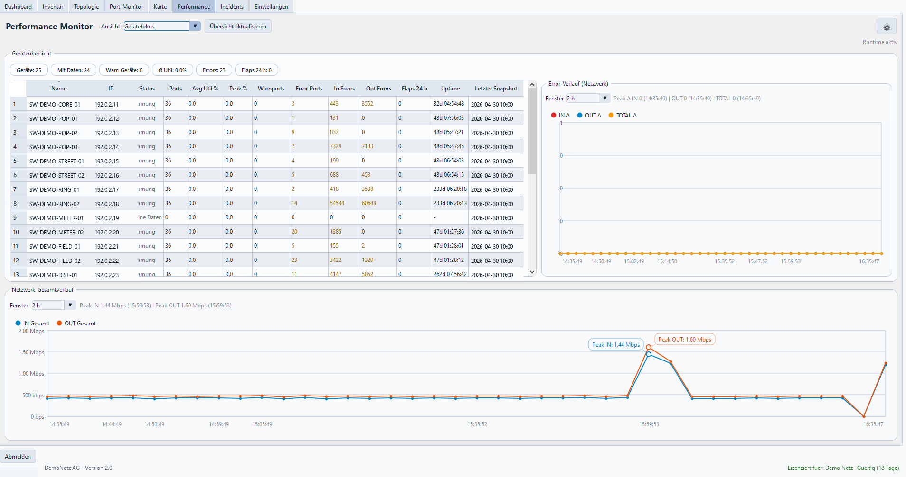
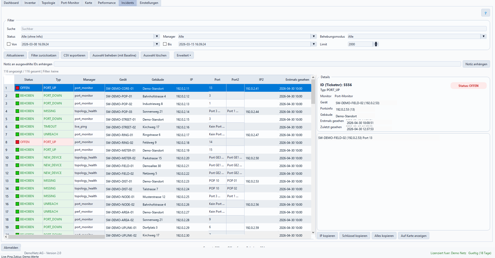

Schneller reagieren
Abweichungen aus Port-Monitor, Live-Ping, Topology-Health und Spannung werden zentral sichtbar.
Für Energieversorger und Smartmeter-Kommunikationsnetze
Switch-Monitor verbindet Port-Monitoring, Endpoint Discovery, DLMS-Spannung, Karte und Incidents in einer operativen Oberfläche für Netzbetrieb und Störungsdienst.
Betrieblicher Nutzen
Switch-Monitor bündelt Portzustände, Gerätestatus, Topologie, Endpoint-Daten und Spannungswerte in einer gemeinsamen Betriebssicht. Dadurch werden Störungen nicht nur erkannt, sondern mit Standort, Gebäude, Port und Historie verbunden.
So bleibt klar, welche Komponente betroffen ist, wo der Impact liegt und welche Information für Entstörung, Priorisierung oder Kommunikation relevant ist.
Entwickelt aus realem Smartmeter- und Glasfaser-Netzbetrieb: mit Erfahrung aus Portdaten, Standortbezug und der praktischen Überwachung von Zählern im Feld.
Abweichungen aus Port-Monitor, Live-Ping, Topology-Health und Spannung werden zentral sichtbar.
Port- und Adressdaten verbinden technische Ereignisse mit Gebäuden, Karte und Incident-Kontext.
Incidents, Historie und Exporte halten Störungen, Statuswechsel und Massnahmen dokumentiert.
Warum Switch-Monitor?
Viele marktübliche Monitoring- oder Inventarlösungen decken einzelne Teilbereiche gut ab, bleiben aber bei Smartmeter-Netzen oft getrennt: Portstatus hier, Kartenmaterial dort, Zählerwerte wieder in einer anderen Sicht. Switch-Monitor verbindet diese Perspektiven gezielt für den operativen Netzbetrieb.
Operativer Ablauf
Der Nutzen entsteht nicht nur durch einzelne Module, sondern durch den gemeinsamen Ablauf: technische Signale werden erkannt, einem Ort zugeordnet, alarmiert, dokumentiert und für die Weitergabe exportierbar gemacht.
Portstatus, Ping, Topologie, Endpoint-Sichtungen, Performance und Spannung liefern die technischen Signale.
Switch, Port, Gebäude, Karte und House-Info verbinden das Ereignis mit dem betroffenen Standort.
Managerbezogene E-Mail-Regeln leiten Meldungen gezielt an die passenden Empfänger weiter.
Incidents halten Status, Ticketnummer, Verlauf, Notizen und manuelle Behebungen nachvollziehbar fest.
Incident-Daten können als Excel-Datei, Inventardaten als CSV oder Excel für Auswertung und Übergabe exportiert werden.
Funktionsumfang
Die Module greifen ineinander: ein technisches Ereignis kann als Incident erscheinen, auf der Karte sichtbar werden und in Mail-Digests oder Exporten weiterverarbeitet werden.
Manager-Zustände, offene Ereignisse, Laufzeitdaten und Handlungsbedarf in einer kompakten Betriebslage.
SNMP-basierter Soll-/Ist-Vergleich für Switch-Ports, Baselines, neue Uplinks und Port-Up/Port-Down-Ereignisse, inklusive Excel-Import für die Portdatenbank.
Erreichbarkeitsprüfung für Ziele ohne Spezialprotokoll, mit Schwellen gegen Fehlalarme.
Vergleicht Layer-2-Topologie mit Snapshots und erkennt fehlende, neue oder unklare Verbindungen.
Räumliche Einordnung von Standorten, Statusmarkern, offenen Incidents, Spannungshinweisen und Gebäude-Detailansicht mit Anschlussstatus und Historie.
Störungen mit Ticketnummer, Verlauf, Filter, Notizen, manueller Behebung und Exportfunktionen für Auswertung oder Weitergabe.
Zeitreihen für Traffic, Errors und qualitative Auffälligkeiten ausgewählter Netzwerkgeräte.
Host-, MAC-, DHCP-, ARP- und Portkontext für Geräte, die im Smartmeter-Netz automatisch erkannt werden.
DLMS-Werte pro Phase mit stabiler Phasenerkennung, Unterspannungswarnung und Zuordnung zu Port und Standort.
Neue Ausbaustufe
Endpoint Discovery verbindet erkannte Geräte mit Switch, Port, VLAN und Standort. Das Spannungsmodul nutzt diesen Kontext, damit Messwerte nicht isoliert bleiben, sondern auf Gebäude, Port und betroffene Kundensituation zeigen.
Switch-Monitor kombiniert DHCP-Leases, ARP, DNS-PTR und SNMP-Kontext, um Hosts besser einzuordnen. Mehrdeutige Zuordnungen werden mit Port-Kandidaten, Match-Grund und VLAN transparent gemacht.
DLMS-Abfragen liefern Spannungswerte pro Phase, inklusive Unterspannungs- und Kommunikationswarnungen. Die Ergebnisse erscheinen im Dashboard, in Incidents, auf der Karte und im Standortkontext.
Auto-Übernahmen
Switch-Monitor kann neue Zustände übernehmen, ohne die Kontrolle abzugeben. Die Automatik arbeitet mit Bestätigungsschwellen, schreibt Historie und blockiert Kandidaten, wenn Daten widersprüchlich, als Altbestand markiert oder nicht stabil genug sind.
Neue dauerhaft aktive Ports können nach konfigurierbarer Anzahl bestätigter Polls in die aktive Baseline übernommen werden. Danach gelten Soll- und Ist-Zustand konsistent als UP, offene Meldungen werden als Baseline-Übernahme dokumentiert.
Neue Zähler aus Endpoint Discovery werden optional als Spannungsziele angelegt, sobald mehrere DLMS-Abfragen erfolgreich waren und die Phasen plausibel gelernt wurden. Geisterwerte, Duplikate und Altbestand werden nicht übernommen.
Hosts wechseln nachvollziehbar zwischen aktiv, offline, alt und Altbestand. Diese Zustände steuern, welche Geräte noch als aktuelle Kandidaten gelten und welche nur historisch sichtbar bleiben.
Produktansichten
Die zusätzlichen Ansichten zeigen, wie Portzustand, Endpoint-Erkennung, Spannung, Standort und Historie in der täglichen Arbeit zusammenlaufen.










Typische Einsatzfälle
Switch-Monitor ist auf operative Situationen zugeschnitten, in denen technische Signale schnell in verständliche Standort- und Handlungsinformationen übersetzt werden müssen.
Mehrere Port- oder Ping-Ausfälle werden mit betroffenen Adressen und Kartenbezug sichtbar.
Link-Status und Topologieabweichungen unterstützen die Eingrenzung der unterbrochenen Strecke.
Endpoint-, Port- und Spannungsdaten helfen, netzseitige Ursachen schneller auszuschliessen.
Endpoint Discovery zeigt, an welchem Switch und Port ein Endgerät zuletzt gesehen wurde.
Das Spannungsmodul erkennt fehlende oder kritische Werte auf L1, L2 oder L3 und ordnet sie dem betroffenen Ziel zu.
Topology-Health erkennt fehlende Verbindungen, bevor daraus ein grösserer Ausfall entsteht.
Anforderungen
Die Anforderungen hängen von den aktivierten Modulen ab. Die Tabelle zeigt, was für den produktiven Nutzen benötigt wird und welche Daten nur zusätzliche Genauigkeit liefern.
| Bereich | Benötigt | Optional / Genauigkeit | Nutzen |
|---|---|---|---|
| Netzwerkgeräte | SNMP-Zugriff auf die gemanagten Switches; Switch-IPs können erfasst und per SNMP abgefragt werden. | Technische Schnittstelleninformationen aus SNMP; fachliche Portnamen kommen aus der Portdatenbank. | Technische Basis für Portstatus, Topologie, MAC-Tabellen und Performancewerte. |
| Portdatenbank | Excel-Export aus der bestehenden Glasfaserplanungssoftware, falls vorhanden. | Gebäude, Adresse, Portlabel, Gerätetyp und vorhandene Sollzustände. | Bessere Zuordnung für Port-Monitor, Karte, House-Info und Automatik. |
| Karte | Gebäudeadresse, Koordinaten und Tiles als Kartenmaterial. | POP-Standorte und Standortbezug werden über Adresse und Inventardaten übernommen. | Standortbezug für Störungen, Statusmarker und Gebäudeansicht. |
| Endpoint Discovery | Erreichbarer lokaler DHCP-Server; kein manueller DHCP-Import nötig. | DNS-/Namenskontext, wenn im Netz verfügbar. | Erkennen, wo Endgeräte zuletzt gesehen wurden. |
| Smartmeter / Spannung | Benutzer und Authentifizierungs-Passwort für die Smartmeter-Abfrage. | Profil- und Zielstruktur je nach gewünschter Überwachung. | DLMS-Spannungswerte, Phasenstatus und Auto-Übernahme geprüfter Ziele. |
| Alarmierung | Generische Alarm-Mailadresse für den Versand. | Empfänger je Manager und gewünschte Mailregeln. | Gezielte Digests für Port-Monitor, Live-Ping, Topologie, Endpoint, Spannung und Performance. |
Betrieb & Daten
Die Anwendung ist als Desktop-Werkzeug mit lokaler Datenhaltung, Rollen, Logging und Backup/Restore ausgelegt. Kommunikation erfolgt über vorhandene interne Schnittstellen wie SNMP, Ping, DLMS und SMTP.
Kontakt
Für eine Demo, technische Fragen oder eine erste Prüfung der vorhandenen Daten steht Martin Carlini direkt zur Verfügung.